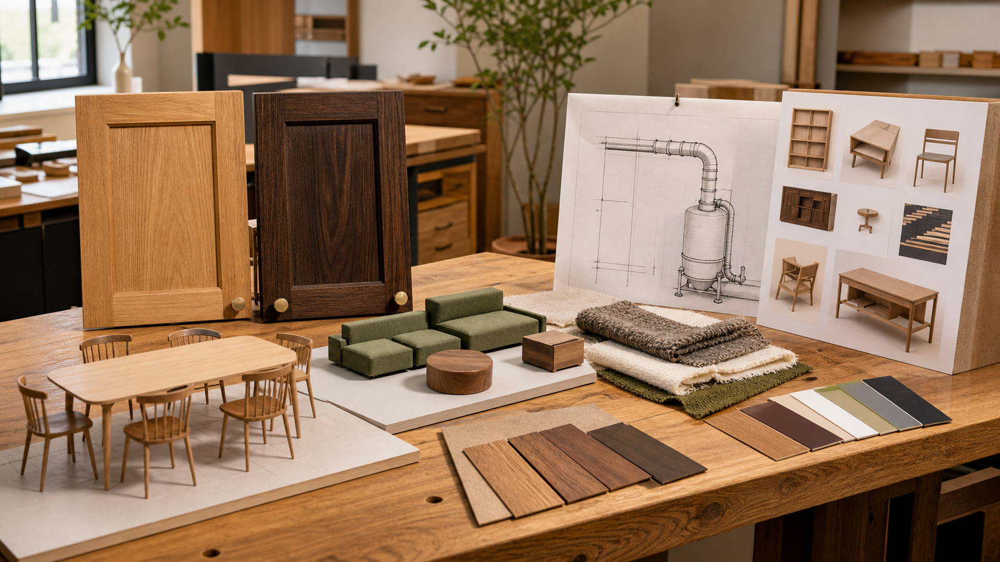

2026.08.21 가구·인테리어·목공 일일 트렌드

오늘의 흐름은 한 가지 스타일을 새로 사는 것보다 기존 가구와 공간의 쓰임을 다시 조정하는 쪽에 가깝습니다. 식당은 세트 구매보다 축적된 조합으로 이동하고, 아이 방은 성별 코드보다 활동과 건강 소재가 중요해지고 있습니다. 목공 현장에서는 집진과 마감의 품질 관리가 전면으로 올라오며, 디자인 어워드는 신진 가구 디자이너와 제작 인력의 연결이 산업 과제라는 점을 다시 보여줍니다.
1. 식당 가구는 '세트 구매'보다 섞어 쓰는 구성이 더 오래갑니다
Southern Living은 2026년 8월 20일 더 시대를 타지 않는 식당을 위해 치워야 할 요소로 매칭 가구 세트, 평범한 종이 전등갓, 크기가 맞지 않는 가구, 지나치게 격식적인 구성, 주황빛이 강한 장식장을 꼽았습니다. 디자이너들은 식당이 한 번에 산 세트처럼 보이기보다 오래 진화해 온 공간처럼 보여야 하며, 기존 세트도 테이블 도장이나 의자 슬립커버로 새 생명을 줄 수 있다고 설명했습니다.
왜 중요한가. 목간이 식탁을 제안할 때 의자, 조명, 수납장까지 같은 톤으로 맞추는 패키지는 오히려 낡아 보일 수 있습니다. 식탁은 원목의 중심을 잡되 의자는 서로 다른 등받이, 벤치, 빈티지 의자를 섞는 식으로 구성하고, 장식장은 다 보여주는 진열장보다 닫힌 수납과 일부 오픈 선반을 혼합하는 편이 실사용과 시각적 수명 모두에 유리합니다.
2. 아이와 청소년 공간은 가구보다 '활동을 만드는 배치'가 핵심입니다
Architectural Digest는 2026년 8월 20일 키즈 공간 디자인의 새 규칙으로 스크린 없는 연결 장치, 청소년 라운지와 레크리에이션룸, PFAS 계열 방오 처리에 대한 경계, 성별 고정형 방 꾸미기에서 벗어난 개인화된 색채를 짚었습니다. 기사에서 디자이너들은 청소년 공간을 빈백과 장식품으로만 채우기보다 소파, 섹셔널, 오토만, 게임 테이블처럼 실제로 함께 시간을 보내게 만드는 가구로 구성한다고 설명했습니다.
왜 중요한가. 목간의 가족용 가구 기획은 아이 책상이나 침대 하나로 끝나면 약합니다. 이동 가능한 오토만, 수납을 겸한 벤치, 낮은 게임 테이블, 오래 쓰는 원목 선반처럼 성장 단계가 바뀌어도 재배치할 수 있는 모듈을 제안해야 합니다. 방오 기능을 과장하는 합성 소재보다 세탁 가능한 면·울·패턴 직물과 표면 보수 가능한 원목을 함께 설명하는 것이 더 설득력 있습니다.
3. '남부식' 인테리어 조언의 핵심은 지역성, 기억, 오래된 가구의 재사용입니다
Southern Living은 2026년 8월 20일 남부 인테리어 디자이너들이 반복해서 쓰는 원칙으로 오래된 가구와 새 가구의 혼합, 의미 있는 컬렉션, 실내외 연결, 과감한 색, 골동품 재활용, 질감과 패턴의 레이어링을 정리했습니다. 핵심은 특정 지역 스타일을 표면적으로 흉내 내는 것이 아니라, 집의 기억과 장소성을 가구와 소재에 반영하는 일입니다.
왜 중요한가. 한국 원목가구 브랜드가 전통을 말할 때도 '한옥풍 장식'만 붙이면 얕아집니다. 고객이 이미 가진 오래된 장롱, 의자, 목재 소품을 새 수납장이나 식탁과 어떻게 섞을지 제안해야 합니다. 공모전이나 포트폴리오에서는 지역 목재, 가족의 사용 기억, 기존 가구 리폼 과정을 함께 보여줄 때 단순 제품보다 이야기의 밀도가 높아집니다.
4. IWF를 앞두고 집진과 마감 품질 관리가 작은 공방의 경쟁력으로 부상합니다
Woodworking Network는 2026년 8월 20일 Oneida Air Systems가 IWF 2026에서 자동 폐기물 처리, 고압 집진, 소형 산업용 집진 솔루션을 선보인다고 보도했습니다. IWF 개요도 2026년 8월 25일부터 28일까지 애틀랜타에서 목공 기계, 재료, 서비스, 스마트 공장, 매스팀버, 신기술 시연이 집중된다고 설명합니다. 전날 보도된 AkzoNobel·Chemcraft IWF 소식은 여러 수종과 색상에서 마감 결과를 비교하고, 생산성과 일관성을 높이는 마감 파트너십을 강조했습니다.
왜 중요한가. 작은 공방은 대형 CNC보다 먼저 집진과 마감 표준을 정비해야 합니다. 분진은 안전 문제이자 제품 표면 품질 문제이고, 마감 편차는 고객 클레임으로 바로 이어집니다. 목간은 샌딩-집진-도장-건조 체크리스트를 만들고, 수종별 오일·스테인·도장 샘플을 보관해 같은 주문이 반복될 때 결과가 흔들리지 않게 해야 합니다.
5. Pinnacle Awards 30주년은 디자인, 제조, 학생 인력의 연결을 보여줍니다
Woodworking Network는 2026년 8월 20일 International Society of Furniture Designers가 30번째 Pinnacle Awards를 2026년 10월 19일 Fall High Point Market 기간에 연다고 보도했습니다. 행사는 디자이너, 제조사, 리테일러, 학생을 모으고, 티켓 수익 일부는 ISFD Foundation Scholarship Fund를 통해 학생 디자이너 장학금에 쓰입니다. 별도 보도에서는 BlackRock Future Builders의 첫 RFP에 1,000건 이상 신청과 9억 달러 이상 요청이 몰렸고, 숙련 기능직 훈련 수요가 훈련 역량보다 빠르게 커지고 있다고 전했습니다.
왜 중요한가. 가구 공모전은 예쁜 렌더링을 뽑는 행사가 아니라 제조 가능성과 산업 네트워크를 검증하는 장이어야 합니다. 목간이 학생·신진 디자이너와 협업한다면 도면, 목업, 수종 선택, 제작 시간, 마감 실패 기록까지 심사 자료로 남겨야 합니다. 공방 운영 측면에서도 숙련 인력 부족은 남의 일이 아니므로, 반복 가능한 작업 표준과 교육 가능한 공정 분해가 필요합니다.
오늘의 실무 인사이트
- 식탁 제안서는 세트가 아니라 조합표로 만든다. 같은 수종 세트 하나보다 식탁, 의자, 벤치, 조명, 수납장의 톤 차이를 보여주는 조합표가 더 오래가는 구매 결정을 돕습니다.
- 가족 공간 가구는 재배치를 전제로 설계한다. 아이가 성장하면서 책상, 라운지, 놀이, 수납 용도가 바뀌므로 오토만, 낮은 테이블, 벤치, 선반은 독립 모듈로 움직일 수 있어야 합니다.
- 공방 품질 관리는 집진에서 시작한다. 좋은 마감재를 써도 분진 관리가 약하면 표면 결함과 건강 리스크가 동시에 생깁니다. 집진 동선과 청소 루틴은 장비 구매보다 먼저 문서화해야 합니다.
- 공모전 협업은 제작 기록까지 상품화한다. 완성 사진만 남기지 말고 수종 후보, 목업 실패, 결구 수정, 마감 테스트를 콘텐츠로 쌓아야 브랜드 신뢰와 교육 자산이 됩니다.